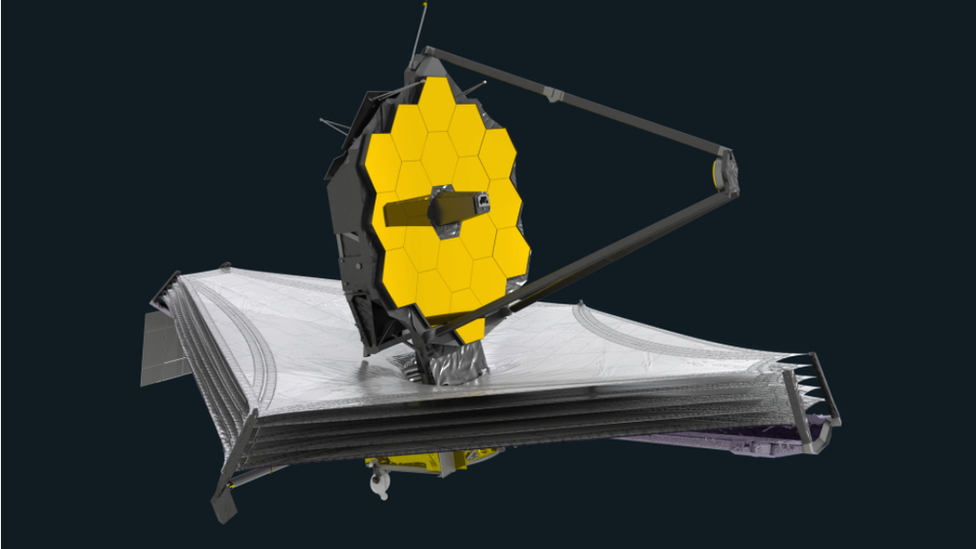

Texto
Principio de una antena parabólica.

ALMA, el radiotelescopio más grande del mundo está en Chile
![ALMA, el radiotelescopio más grande del mundo y situado a 5.000 metros de altura en el Desierto de Atacama (Chile), cumple 10 años de vida, un tiempo en el que ha desvelado numerosos secretos del Universo, entre ellos, la primera fotografía de un agujero negro. Son 66 las antenas del ALMA que conforman el telescopio más ancho del mundo, y durante su primera década ha avanzado en el conocimiento sobre la creación de nuevos planetas o el origen de la vida en otros puntos del universo. Nicolás Lira coordinador de comunicaciones del observatorio: “Las antenas acá las podemos mover en distintas posiciones y ubicaciones, de forma que podamos ampliar el conjunto o hacerlo más compacto y tener distintas, según las necesidades astronómicas, distintos tipos de observación. Mientras más ampliamos las antenas, tenemos todavía mejor resolución angular. ¿Qué quiere decir esto? Es como hacer un zoom de una cámara”, comentó Lira. ALMA es posible gracias al trabajo conjunto de una veintena de países -entre ellos Estados Unidos, Europa, Japón o Chile-, una colaboración que también se da entre varios grandes observatorios situados en distintos puntos del planeta y que hace posible llegar a descubrimientos astronómicos singulares. Uno de los puntos fuertes del observatorio chileno es su capacidad para captar componentes químicos en el universo. »¿Qué es lo que espero? Lo inesperado. Recopilamos datos de muchos proyectos, y a veces, no sabemos qué saldrá de ellos. Amo las sorpresas, cuando descubres algo que nunca habías imaginado”, informó Elizabeth Humphreys, jefa del departamento de Ciencia de ALMA. Este radiotelescopio fue una revolución para la astronomía de hace una década, pero la comunidad científica ya trabaja en mayores telescopios que expandan las fronteras del conocimiento que el mismo observatorio chileno pudo traspasar.](../content/resources/20251107102602972HU1/545-1-CIENCIA_ALMAradiotelescopio_Foto-de-EFE-Rodrigo-Saez.png "ALMA, el radiotelescopio más grande del mundo está en Chile")
Captación de luz o radiación:
El telescopio recoge la luz (o radiación) de un objeto lejano con una lente o espejo grande (llamado objetivo).
Enfoque:
Esa luz se concentra en un punto (llamado foco), donde se forma una imagen real del objeto.
Ampliación:
Luego, un sistema de lentes (como el ocular) amplía esa imagen, para que pueda ser observada o registrada con cámaras especiales.
Registro y análisis:
Los telescopios modernos no solo muestran imágenes al ojo humano:
graban los datos con sensores digitales, que los astrónomos analizan en computadoras.
